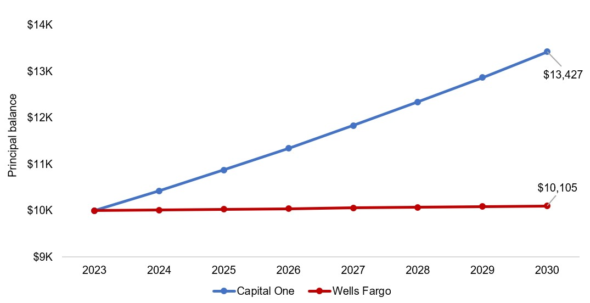

Personal finance
Easy money: a high-yield savings account (HYSA)
July 31, 2023
Americans regularly leave money on the table when they don’t utilize high-yield savings accounts (HYSA). These accounts are no different than savings accounts at traditional brick and mortal banks but yield far higher interest; for example, a savings account at Wells Fargo yields 0.15% while a savings account at Capital One yields 4.30%. If current interest rates were to persist, $10K of savings at Capital One would compound to almost $13.5K by 2030 but would stay effectively the same at Wells Fargo.
Why such a large difference in the annual percent yield (APY)? Traditional brick and mortar banks – like Wells Fargo, Bank of America, and JPMorgan Chase – spend immense amounts on real estate and staff salaries when offering a traditional banking experience. Banks with HYSAs typically invest heavily in their online infrastructure (e.g., mobile check deposit) and are able to better pass on the savings to you as a consumer.
Rates, of course, vary across banks. But the gist of it is this: the Federal Reserve sets the federal funds rate (FFR), which is the rate at which banks lend to one another. As of the end of July, the FFR is north of 5%, which means that when you deposit money at a bank, this is what the bank will generally make off your deposit. HYSAs pass on some of the earnings onto you. You can see the current and historical FFR here.
The interest rate offered to you is heavily tied to the FFR, so when the Fed increases or decreases rates, you can expect your APY to adjust accordingly. However, you’ll generally always make more than what a traditional bank offers – banks who offer low interest rates really do rake in cash with what you deposit and don’t pass this onto you.
You can Google around for the best HYSA that works for you. Ideally, it pairs nicely with other products you may have at the institution such as a credit card at Capital One or American Express. But the most important part is to make sure that the account is FDIC insured.
Please feel free to comment here or email me at joglekar.rutvik@gmail.com if you have any questions!